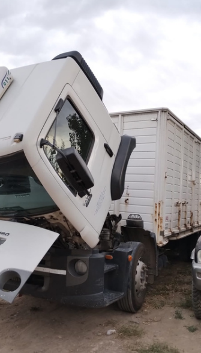
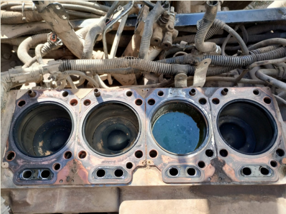
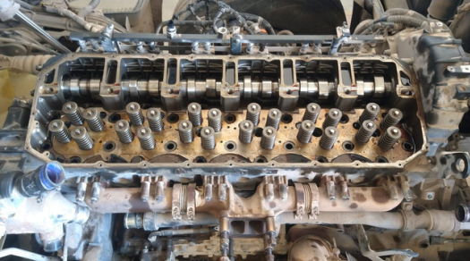
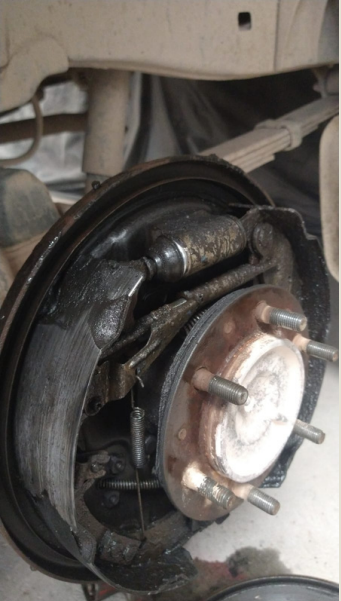
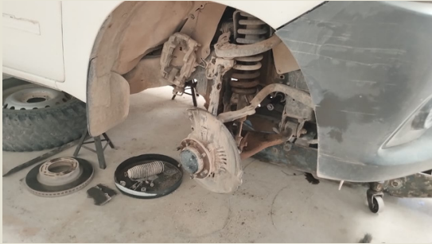
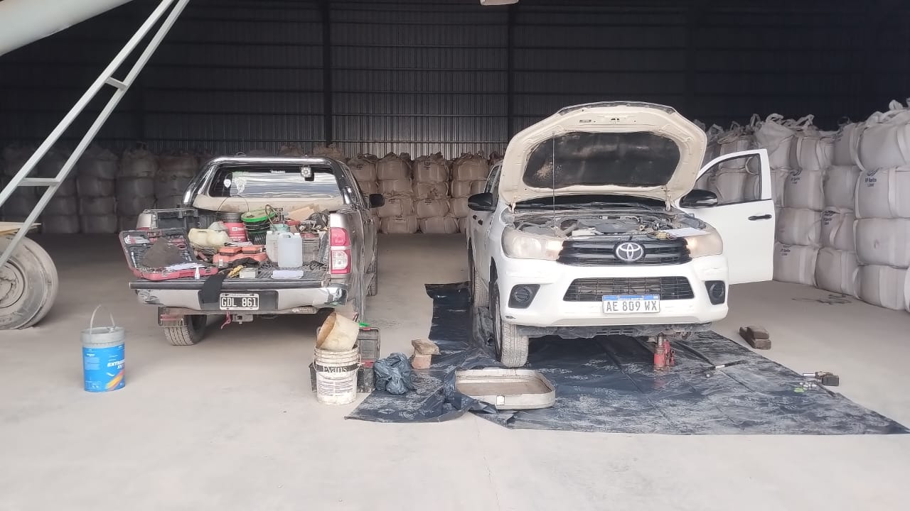
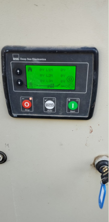
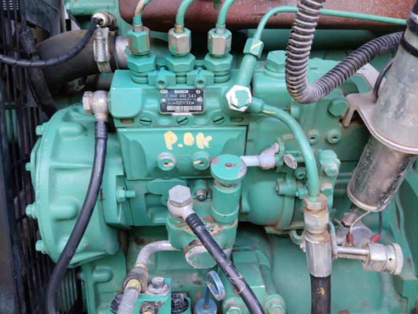

Ofrecer una amplia gama de servicios, incluyendo
motores Diésel, convencionales, estacionarios y electrónicos, mecánica
general para vehículos, chapa y pintura, electricidad, electrónica, e
instalación de equipamiento . Diagnostico computarizado y regeneración
de DPF. Adaptamos nuestros conocimientos a las necesidades
específicas de cada cliente.
Haz click al vehículo que estés interesado y obtené
más información
La flota pesada de camiones es clave en el transporte de mercancías. El mantenimiento y reparación
son esenciales para asegurar su funcionamiento y prolongar su vida útil, previniendo fallos y retrasos. Esto
incluye
revisiones periódicas, cambio de piezas desgastadas y diagnóstico de averías, con un enfoque en el
mantenimiento
preventivo para evitar problemas mayores y costosas reparaciones.



La flota liviana de camionetas se utiliza principalmente para transporte de cargas más pequeñas. El
mantenimiento
y reparación son cruciales para garantizar su funcionamiento óptimo y evitar fallos. Esto incluye revisiones
regulares,
cambio de piezas y diagnóstico de posibles problemas, con un enfoque en el mantenimiento preventivo para
evitar averías
costosas y prolongar su vida útil.



Mantener el generador (alternador) del vehículo es esencial para el funcionamiento eléctrico y evitar fallas.
Convierte la energía mecánica del motor en electricidad, alimentando sistemas como luces y aire acondicionado,
y carga la batería. Un alternador en mal estado puede descargar la batería y causar problemas al arrancar. Un
mantenimiento
regular previene fallos y garantiza el buen rendimiento del vehículo.


Mantener y reparar los equipos de enganche es crucial para garantizar la seguridad y el rendimiento al
remolcar. Estos equipos, que conectan el vehículo con remolques o cargas pesadas, deben estar en buen estado
para evitar accidentes o daños durante el transporte.
El desgaste, la corrosión o piezas sueltas pueden afectar la estabilidad del remolque y aumentar el riesgo de
fallos. Inspeccionar y reparar regularmente el enganche asegura que el equipo funcione correctamente,
manteniendo una conexión segura y protegiendo tanto el vehículo como la carga.